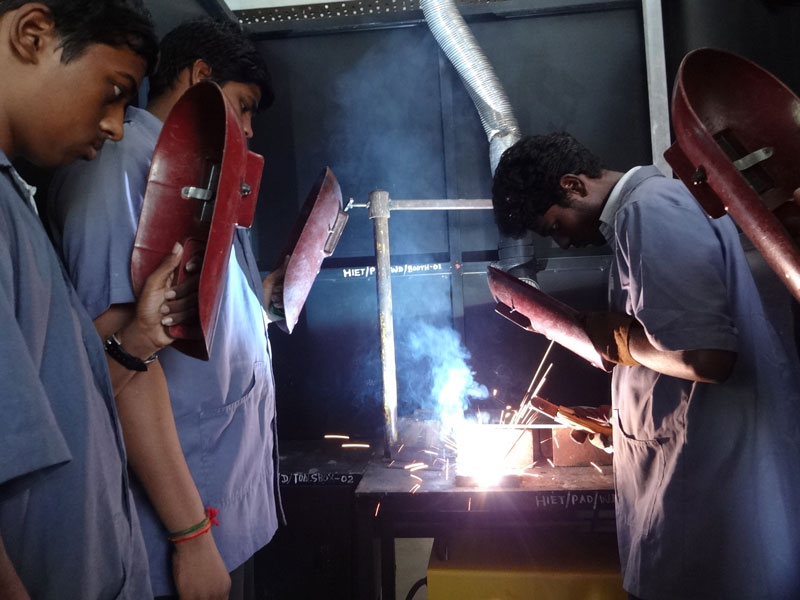

☛ Material Testing Laboratory is a well equipped laboratory which provides ideas on the practical knowledge of test several properties of material like ductility, surface roughness, malleability, hardenability etc.
☛materials testing, measurement of the characteristics and behaviour of such substances as metals, ceramics, or plastics under various conditions. The data thus obtained can be used in specifying the suitability of materials for various applications.
☛Fluid Mechanics & Hydraulic Machines Laboratory is a well equipped laboratory which provides ideas on hydraulic turbine and carry out their performance study useful hydel power plants. Examine and understand pump working characteristics under given constraints.
☛Estimate frictional forces applicable in a flow channel to determine major and minor losses.A fluid machine is a device which converts the energy stored by a fluid into mechanical energy or vice versa. The energy stored by a fluid mass appears in the form of potential, kinetic and intermolecular energy.
☛A foundry is a factory that produces metal castings. Metals are cast into shapes by melting them into a liquid, pouring the metal into a mold, and removing the mold material after the metal has solidified as it cools. The most common metals processed are aluminum and cast iron.
☛A particular aim of Foundry Technology is to assist engineers and engineering students in appreciating the role of castings in design and materials selection.Some important foundry tools and equipments are shovel, riddle, rammer, slick, lifter, swab, bellow, trowel, gate cutter, gaggers, moulding boxes and moulding machines.
☛This laboratory is aimed at providing an introduction to the Know how of common processes used in industries for manufacturing parts by removal of material in a controlled manner. Auxiliary methods for machining to desired accuracy and quality will also be covered.
☛The emphasis throughout the laboratory course will be on understanding the basic features of the processes rather than details of constructions of machine, or common practices in manufacturing or acquiring skill in the operation of machines. Evidently, acquaintance with the machine is desirable and the laboratory sessions will provide adequate opportunity for this.
☛Engineering workshop is the laboratory which provides both the area and tools (or machinery) that may be required for the manufacture or repair of manufactured goods.Machine play a very important role in a workshop where metal working or woodworking tasks are performed.
☛They enable speed process in the workshops and enhance the accuracy and efficiency of the processes.A Workshop Engineer oversees workshop operations, managing equipment, tools, and resources. They coordinate with technicians, ensure safety protocols, and optimize workflow.
☛CNC Machine Lab Consists of CNC Turning Centre and 3 Axes CNC Vertical Milling Machine with closed loop servo motor control fitted with Industrial Control Panel with further option of linking to CAD/CAM Manufacturing System.
☛Computer numerical control (CNC) is a manufacturing method that automates the control, movement and precision of machine tools through the use of preprogrammed computer software, which is embedded inside the tools.
☛This laboratory consists of different process trainer test rigs and Programmable logic controllers (PLC). The laboratory is mainly focussed on identification and design of controllers for real time continuous processes.
☛The simulation software are very much helpful for the students for better understanding the concepts and as well as to implement advance level continuous/discrete level process control algorithm. It is also give exposure on discrete state level real time process automation using PLC.
☛The Metrology Laboratory provides precision measurement and dimensional analysis of small and moderate sized parts. The Metrology Laboratory is also responsible for optical window testing, thread form verification, and surface finish determination.
☛The lab calibrates field standards for volume used primarily in the inspection and calibration of retail motor fuel dispensers, oil trucks, and propane trucks.These machines use a measuring probe to determine coordinates of points on a workpiece surface.
☛The science of the relationship between heat, work and the properties of systems and the ways in which heat energy from fuels can be converted into mechanical work.Purpose of Thermodynamics lab is to measure the specific heat capacity of a metal, the heat of solution and the heat of neutralization of various reactions.
☛ A correction term for a solution of electrolytes which takes into account that in a dilute solution a given solute dissociates into ions in a given solvent. Thermodynamics deals with the transfer of energy from one place to another and from one form to another.
☛The lab facilitates the practicals for the course work of UG students. It expediates the computation platform to execute simulation, modelling, analyses related to the research work of UG, PG, PhD students of the department.CAD/CAM Lab is equipped with the latest Machines Tools and Design Software & Simulation tools with Hy-Tech CNC Turning & Milling machines.
☛Its provide hands exposures on Milling & Turning machine which has PCL interface to M-code and G-code, also has flagship CAD/CAM software packages and high end CAD/CAM workstations to meet the present industrial requirements.
☛In refrigeration, there is a transfer of thermal energy from a place at a cold temperature to a place at a higher temperature. In AC, thermal energy is taken away to keep the air at a cool temperature. Parts. The refrigeration parts include a compressor, condenser, and evaporator in one unit.
☛This is ideal from the standpoint of air conditioning, as the function of an air conditioning system is to absorb heat from all sources, maintain constant temperature, and humidity conditions, and supply ample ventilation to protect the health of the laboratory technicians.